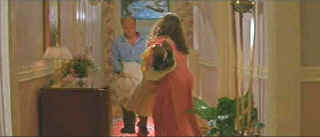

| China
Moon/ B+, B+ |
| MGM/1991/99/ANA
2.35/PS 1.33 |
While the plot convolutions may be difficult to follow, a
seedy reality of characters sucked into a whirlpool of darkness and deception unfolds with
panache in the debut directing effort of fine cinematographer John Bailey. This updating
of classic forties film noir manages to use beautiful, glossy color without sacrificing
the familiar genre atmosphere.
Ed Harris inhabits the character of a small town homicide
detective with his usual intelligent acting aplomb. Harris disappears into roles and often
goes without due praise owing to this chameleon ease. Kyle Bodine is a smart cop seduced
both by a beautiful woman and his own confidence. Madelaine Stowe makes her most stunning
screen appearance in China Moon. She is as luminous as fine porcelain. She's not the
typical tough noir femme fatale. Rachel Munro is a housewife drawn to desperation by an
impossible marriage. Stowe and Harris are dandy together. Their connection
produces steam. Harris delivers dialogue with flawless focus and
even adds a sense of wonder and love to a line like "My grandmother
used to call that a china moon, like a big old plate of china."
 |
| Clean-up
time. ©MGM |
The opening sets
noir tone conventions very nicely with its jazzy score blending in with
the flashing police lights. Lots of
nice little baiting foreshadowing touches in the dialogue. The heavy
rain not only creates an ambiance but also presents an obstacle to keep
Bodine from seeing clearly. Bailey keeps the pace and turns of the movie at an even
keel. Each section of the film plays itself to perfection and leads logically to the next.
Bailey's skill as a director of photography combines with veteran cinematographer Willy
Kurant to produce a very handsome film that succeeds on enmeshing it's audience just as
Rachel Munro catches Kyle Bodine in her inadvertently corrupted web. Composer George
Fenton delivers a moody jazz score but it falls short of capturing the lurid
quality that would perfectly compliment the material. There's some
outstanding blues delivered at JJ's the club where Harris first spots
Madelaine Stowe.
Excellent looking transfer with deep blacks,
nice shadow details, very good contrast balance and a natural range of
fleshtones. Color has a fine, subtle range. Even a delicate color like
the pale green/blues of the autopsy room appear accurate. Perfect
rendering of the fabric on Benecio Del Toro's tweed jacket with perfect
stability. Some minor interaction of material on the porch swing which
may or may not be DLP related. Slight grain interactivity in pans across
the sky. It's tough material. Overall very sharp transfer. Image
consistently consistently delivers excellent depth. Color is consistent
from scene to scene. Fine rendering of wood tones from Birdseye
maple furniture, hardwood oak floor to mahogany cabinetry. Glossy
night sequences with very deep blacks. The rain shows up beautifully on
the transfer, with a little whitener added for effect. Peak transition
ringing is kept to a minimum. Outdoor scenes have a bright feeling of
sunlight. Dolby 2 channel surround is quite nicely matrixed. There's an
open feeling. The music envelopes the image, dialogue is clear.
China
Moon is one of those excellent films that get the short shrift on
release, but deserve a loyal audience. Lovers of noir should embrace the
film with open arms.
Reviewed on a Sharp 9000VX DLP Projector
|
|
|
|

Selections from the Feature
Archive include articles on
Akira Kurosawa, Frank
Darabont, Blonde
Bimbos, Hollywood
Street Gangs, or Vietnam:
The Hollywood Pariah, and many more....
Film noir: The phrase
hangs awkwardly on the tongue, shadowy images peek out from behind
half-closed doors. Click on the Noir
and Noir Again symbol for a look into the dark spaces of
Hollywood's revisiting of film noir.


Agoraquest is
offering reviews, forums, news, and more dedicated to Sony products
including, televisions, cameras, audio, DVD, and more.

Mystery writer Fred Hunter digs into classic
films on DVD. Check out his insightful reviews at The
Classics on DVD.

The
Movie Poster Archive include extensive poster images from the films of
stars like Susan Hayward, Kirk Douglas, Katharine Hepburn and many
more. Our featured star is Robert
Mitchum

City
of Industry/B+,B+

A heist delivered in simple strokes and
sudden fury. Harvey Keitel is relentless.

|